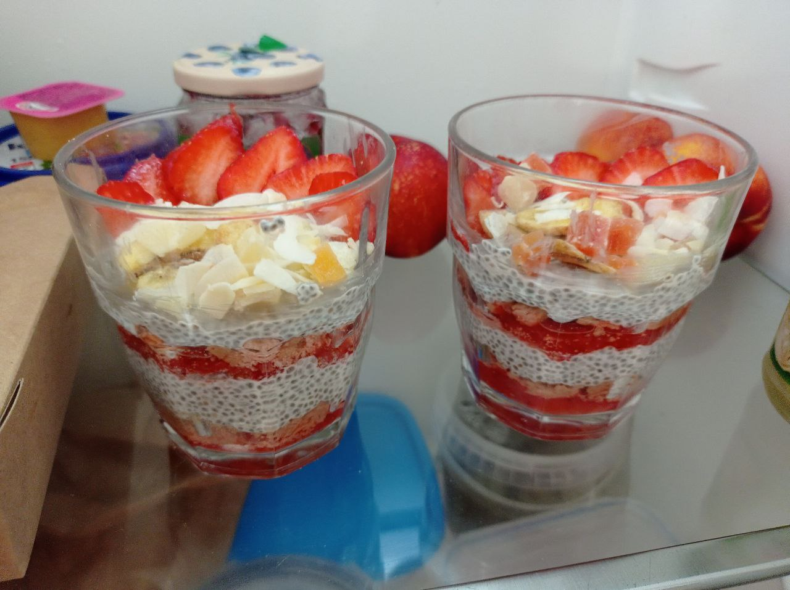

| Prep time | Difficulty | Servings |
|---|---|---|
| 15 min active prep + 1 h waiting | Easy | 2 |
Suggestions:
You can use any fruit, but in my opinion coconut goes best with strawberries 🥴
The more colorful the layers are the prettier the budding will be.
You can put the ready-to-eat cups to the fridge for 1-2 days, but in this case I advise not putting biscuit in, as it absorbs water, which makes it soggy not crunchy.